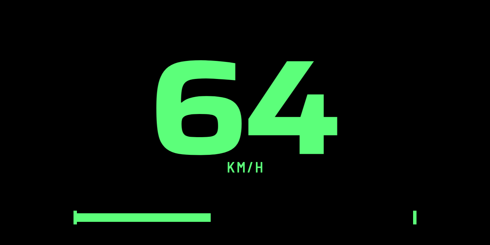
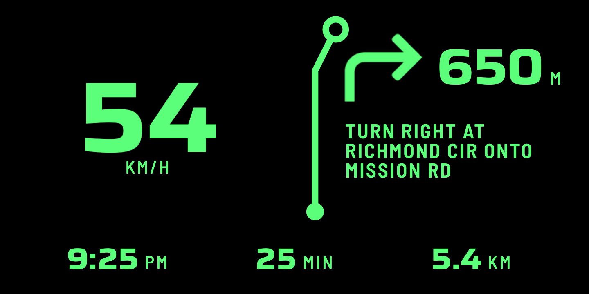
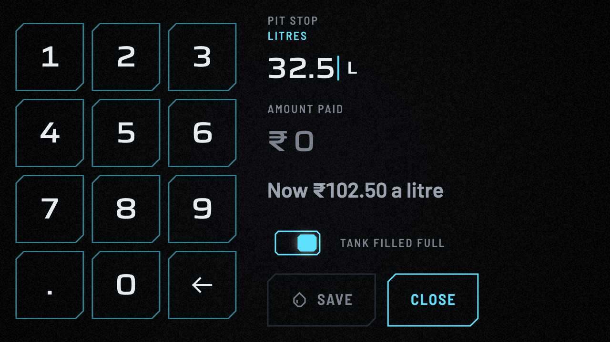
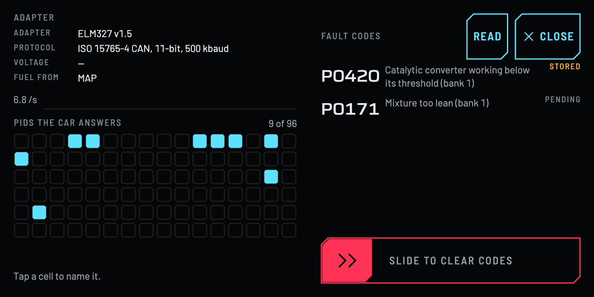
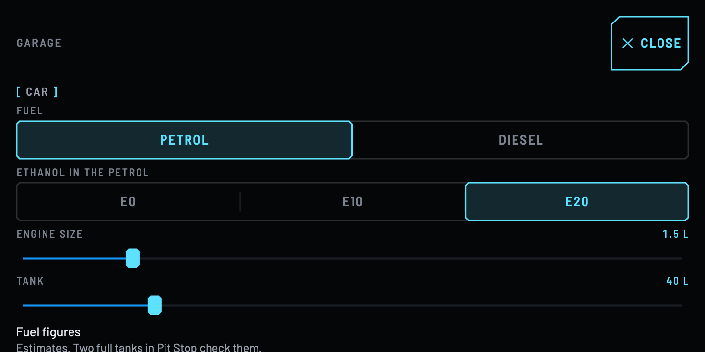

Free / Open source / Strictly offline
An old phone, an OBD adapter and a roll of tape.
TapeDash turns a cheap Android phone into a car dashboard drawn like the best instrument clusters, a windshield HUD, and a trip computer that shows where the money goes. It reads your car through an ELM327 adapter that costs a few hundred rupees, and it never connects to the internet.
What it does
Three jobs, from one cheap adapter
Five layouts, four liveries, numerals that roll with a detent and needles that never jitter. It is meant to look deliberate on a 2016 phone, not just a flagship.
Rupees per trip, per kilometre and for idling. Every rupee goes into exactly one bucket, so the buckets always add up to the trip.
It never nags while you drive. Tips appear only when you are stopped or the trip has ended, they are factual, and they never shame.
Every feature
What is in it
Each page says what the feature does, shows the real app, and says plainly where it has and has not been seen working.
On the dash

The dashboard
Five cluster layouts, four liveries, Daylight and Night, drawn like an instrument and not like an app.

The windshield HUD
Mirrored, pure black, one colour, huge numerals, and an alignment pattern for setting it up on the glass.

Navigation on the HUD
The next turn, the ETA and your speed from Google Maps, read from one notification. TapeDash stays offline.

GPS speed only
No adapter? The speed, distance and time from the phone's GPS alone, and nothing invented.
Where the money goes

Where the money goes
Rupees per trip, per kilometre and for idling, with every rupee sorted into exactly one bucket.

Fuel, fill-ups and calibration
How TapeDash estimates the fuel, and how two full tanks teach it to be right about your car.
Learning from your drives
The driving coach
A gentle coach that never speaks while you drive: a quiet bar on the dash, and advice only when you are stopped.

Trips, Review and History
Every trip kept as a route, a receipt and a replay you can scrub, with a Debrief when it ends.

Insights
Nine things your drives can tell you: the battery, where the energy went, a dyno chart, your gearbox, the tank and more.
The car

Fault codes and the PID matrix
Read stored and pending fault codes in plain words, see what your car answers, and clear codes only when stopped.

Engine sound
An optional engine note made in code that says only what the tach says. Off until you turn it on.
Other screens and your data

The watch
The same APK on a Wear OS watch: a round face, a reel of four faces, and the bezel as input.

Garage, exchange and survey
Settings that stay out of the way, a file format to move your data by hand, and a read-only survey of your car.
How it is built

The rules it keeps
Six promises
Strictly offline
No cloud, accounts, analytics, crash reporting, ads or price lookups. You type the fuel price in. How that is enforced.
Old phones first
Designed to run smoothly on a 2 GB, 32-bit ARM phone with a 720p screen on Android 7.
Open source
Apache-2.0, no Google Play Services, no Firebase, no proprietary SDKs, F-Droid compatible.
Honest numbers
Fuel and money are estimates, labelled as such, with the calibration confidence shown. Rupees are whole, and km/L has one decimal.
Safe by design
Nothing on a driving screen needs a touch. Settings, tips, fill-ups and fault-code clearing open only when you are parked.
Simulator first
Every feature runs end to end on a built-in simulated car, headlessly, in the tests. How the simulator works.
Status
Pre-alpha, and being driven on a real car
The app is built and tested on the simulator, and the first real drives are in. It has not been tried on every adapter or in every car, and no feature page claims more than has been seen.
Seen working
- The whole app, headlessly, on a simulated car: thousands of tests, with the app's estimates compared against the simulator's exact ground truth.
- A Bluetooth Low Energy adapter in one petrol car, over several long drives, on a real phone.
- The navigation HUD with real Google Maps, on Android 16 and Android 7 emulators and on the target phone with a faked position.
- The watch interface on a Wear OS 3 emulator.
Not yet seen
- WiFi and Bluetooth Classic adapters in a real car.
- Fuel and money checked against a real fill-up.
- The HUD on a real windshield, in sunlight.
- The watch interface on a real watch.
- A long drive in the heat with every feature on.
The blunt, current version is docs/STATUS.md in the repository.
Try it
Without a car, or with one
No car, no adapter
Install it on an Android phone or emulator and choose GPS SPEED ONLY on the first screen. To see the whole app on a simulated car, run the simulator on your computer and connect the app to it over WiFi.
In the car
Plug the ELM327 into the OBD port, mount the phone, choose CONNECT MY CAR and drive. There are no release builds yet, so build from source. The steps, and a script for testing on a real car, are in the repository.
# the simulator, served over TCP
dart run tool/sim_server.dart --scenario city_stop_go
# the app, on a connected phone
flutter build apk --release --split-per-abi \
--target-platform android-arm,android-arm64
adb install -r build/app/outputs/flutter-apk/app-arm64-v8a-release.apk